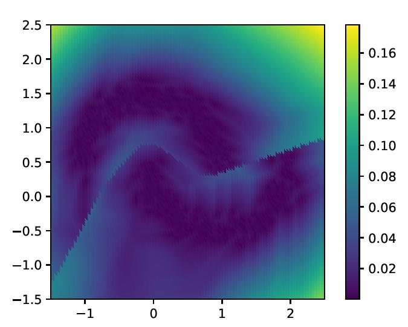
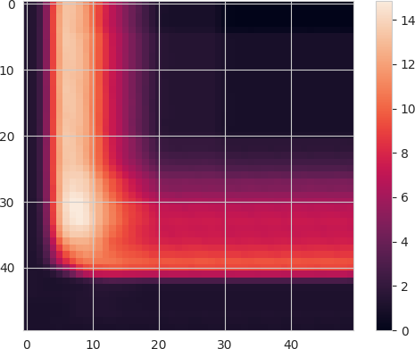
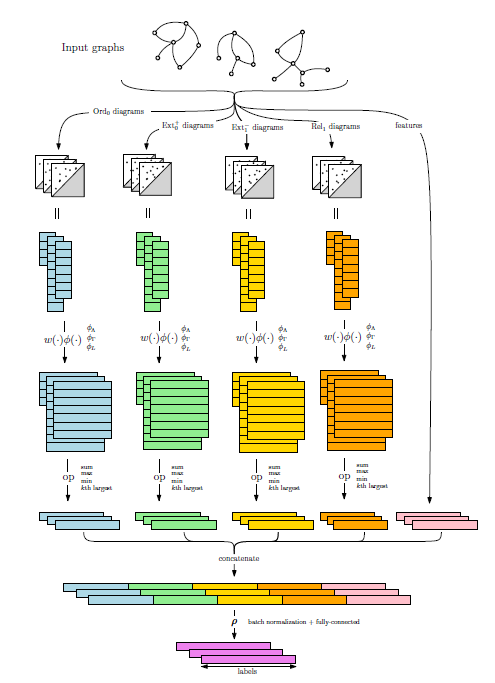
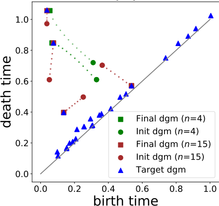
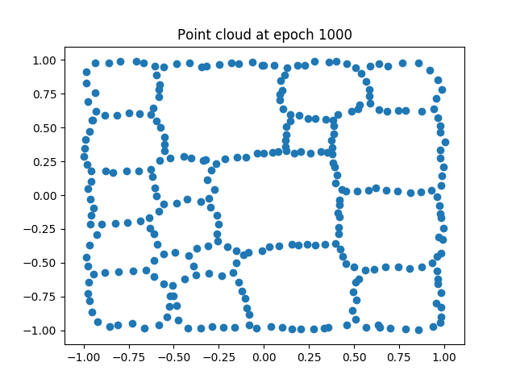
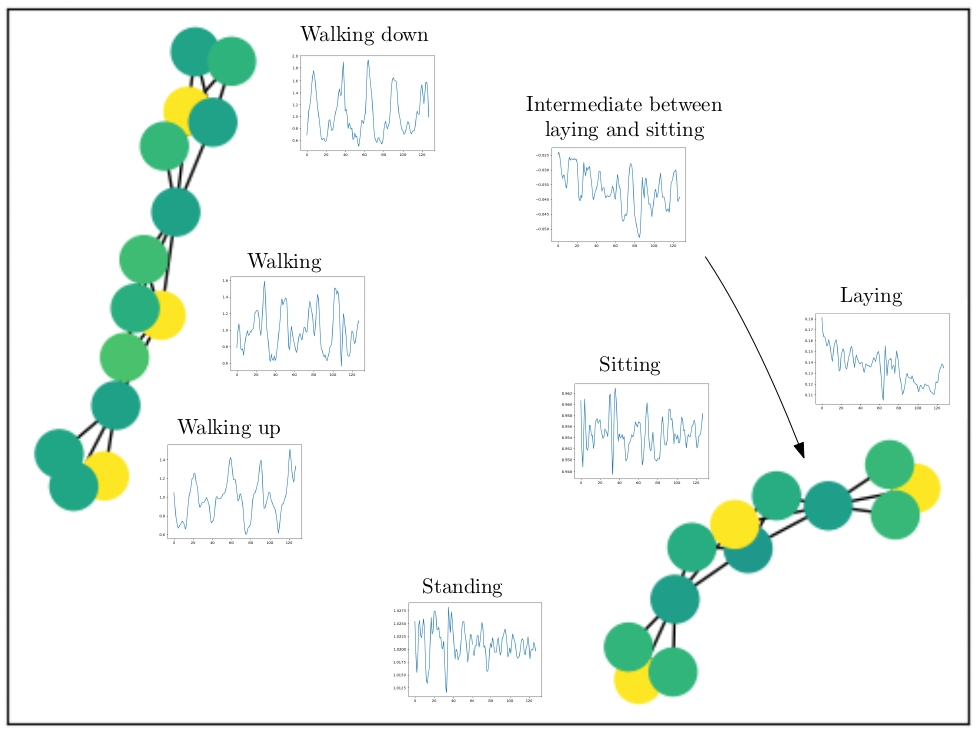
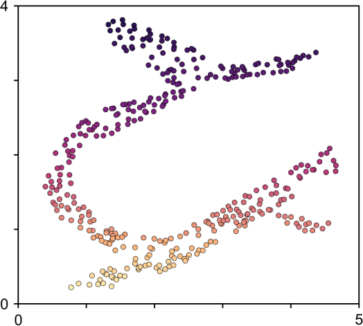
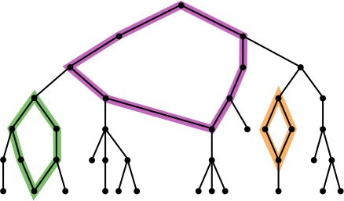
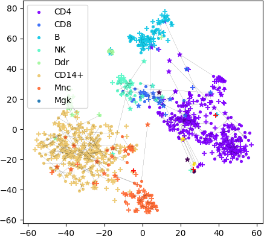
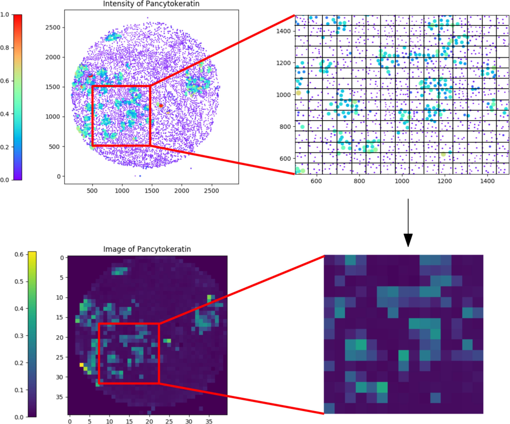

Machine learning

|
RipsNet: a general architecture for fast and robust estimation of the persistent homology of point clouds Thibault de Surrel, Felix Hensel, M.C., Théo Lacombe, Yuichi Ike, Hiroaki Kurihara, Marc Glisse and Frédéric Chazal Preprint, 2022 arXiv, code |
|  |
Topological Uncertainty: monitoring trained neural networks through persistence of activation graphs Théo Lacombe, Yuichi Ike, M.C., Frédéric Chazal, Marc Glisse and Yuhei Umeda Proceedings of the International Joint Conference on Artificial Intelligence (IJCAI), 2021 arXiv, HAL, code |
|  |
Multiparameter persistence image for topological machine learning M.C. and Andrew Blumberg Proceedings of the Conference on Neural Information Processing Systems (NeurIPS), 2020 HAL, code |
|  |
PersLay: a neural network layer for persistence diagrams and new graph topological signatures M.C., Frédéric Chazal, Yuichi Ike, Théo Lacombe, Martin Royer and Yuhei Umeda Proceedings of the International Conference on Artificial Intelligence and Statistics (AISTATS), 2020 arXiv, HAL, code |

|
Sliced Wasserstein kernel for persistence diagrams M.C., Marco Cuturi and Steve Oudot Proceedings of the International Conference on Machine Learning (ICML), 2017 arXiv, HAL, code |

|
Stable topological signatures for points on 3D shapes M.C., Steve Oudot and Maks Ovsjanikov Proceedings of the Eurographics Symposium on Geometry Processing (SGP), 2015 HAL, code, technical report |
Statistics & Optimization
|  |
A gradient sampling algorithm for stratified maps with applications to topological data analysis Jacob Leygonie, M.C., Théo Lacombe and Steve Oudot Preprint, 2021 arXiv, HAL |
|  |
Optimizing persistent homology based functions M.C., Frédéric Chazal, Marc Glisse, Yuichi Ike and Hariprasad Kannan Proceedings of the International Conference on Machine Learning (ICML), 2021, long talk (top 3%) arXiv, HAL, code |
|  |
Statistical analysis of Mapper for stochastic and multivariate filters M.C. and Bertrand Michel Preprint, 2019 arXiv, code |

|
Statistical analysis and parameter selection for Mapper M.C., Bertrand Michel and Steve Oudot Journal of Machine Learning Research (JMLR), 2018 arXiv, HAL, code |
Computational biology
|  |
Identifying homogeneous subgroups of patients and important features: a topological machine learning approach Ewan Carr, M.C., Bertrand Michel, Frédéric Chazal and Raquel Iniesta BMC Bioinformatics, 2021 HAL, code |
|  |
Topology identifies emerging adaptive mutations in SARS-CoV-2 Michael Bleher, Lukas Hahn, Juan Ángel Patiño-Galindo, M.C., Ulrich Bauer, Raúl Rabadán and Andreas Ott Preprint, 2021 arXiv, HAL |
|  |
MREC: a fast and versatile framework for aligning and matching point clouds with applications to single cell molecular data Andrew Blumberg, M.C., Michael Mandell, Raúl Rabadán and Soledad Villar Preprint, 2020 arXiv, code |
|  |
Persistent homology based characterization of the breast cancer immune microenvironment: a feasibility study Andrew Aukerman, M.C., Chao Chen, Kevin Gardner, Raúl Rabadán and Rami Vanguri Proceedings of the International Symposium on Computational Geometry (SoCG), 2020 |

|
Two-Tier Mapper: a user-independent clustering method for global gene expression analysis based on topology Rachel Jeitziner, M.C., Jacques Rougemont, Steve Oudot, Kathryn Hess and Cathrin Brisken Bioinformatics, 2019 arXiv, code |

|
Topological data analysis of single-cell Hi-C contact maps M.C. and Raúl Rabadán Proceedings of the Abel Symposium, 2018 arXiv |
Computational topology

|
On the metric distortion of embedding persistence diagrams into separable Hilbert spaces M.C. and Ulrich Bauer Proceedings of the International Symposium on Computational Geometry (SoCG), 2019 arXiv |

|
Local equivalence and intrinsic metrics between Reeb graphs M.C. and Steve Oudot Proceedings of the International Symposium on Computational Geometry (SoCG), 2017 arXiv, HAL |

|
Structure and stability of the 1-dimensional Mapper M.C. and Steve Oudot Foundations of Computational Mathematics (FoCM), 2017 Proceedings of the International Symposium on Computational Geometry (SoCG), 2016 arXiv, HAL (proceedings), HAL (journal) |